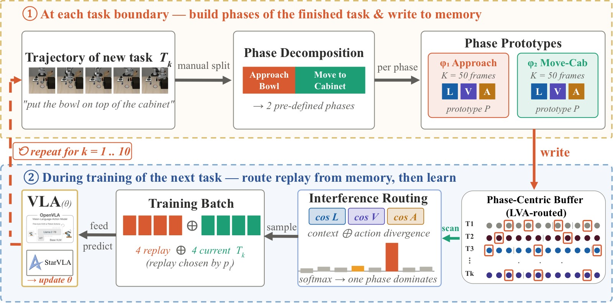
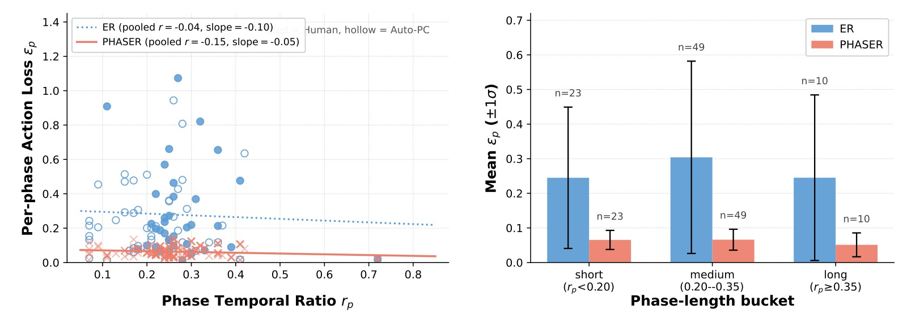
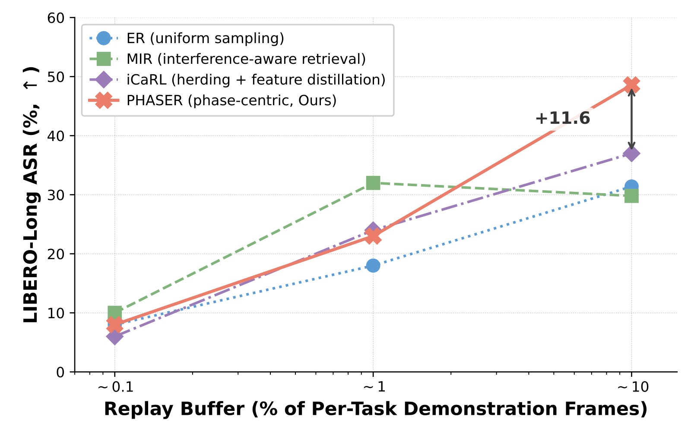
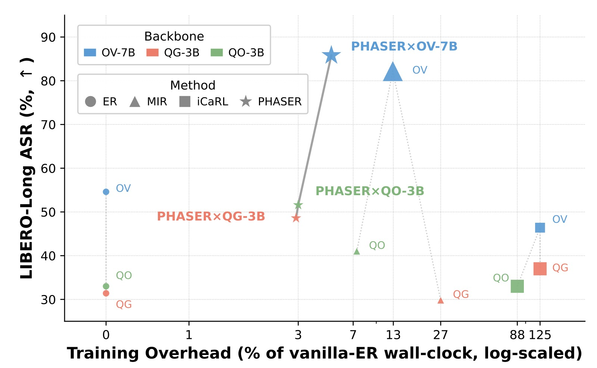
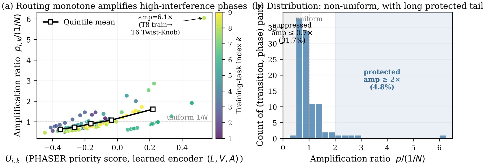
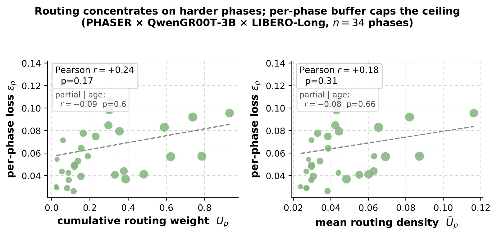

PHASER: Phase-Aware and Semantic Experience Replay for Vision-Language-Action Models
论文信息 - 作者：Ziyang Chen$^{\dagger}$, Shaoguang Wang$^{\dagger}$, Weiyu Guo$^{*}$, Qianyi Cai, He Zhang, Pengteng Li, Yiren Zhao, Yandong Guo - 通讯作者：Weiyu Guo (guoweyu96@gmail.com) - 单位：HKUST(Guangzhou) + AI$^2$ Robotics (Shenzhen) - 投稿方向：CoRL 2026（camera-ready 可能版本） - arXiv ID：2606.03598 - 代码：未公开
一、核心问题
Vision-Language-Action (VLA) 模型在语言条件下的机器人操控任务中取得了显著成功。然而，在开放环境中持续学习新技能时，模型会遭受灾难性遗忘 (catastrophic forgetting)——学习新任务时覆盖了先前习得的动作表征。
经验回放 (Experience Replay, ER) 是防御遗忘的标准手段，但均匀采样 (uniform sampling) 与操控轨迹的时序特性存在根本性错配：
-
任务内 (intra-task) 阶段饥饿 (Phase Starvation)：操控任务自然地分解为不同时长的子阶段（如 approach / grasp / transport）。均匀帧采样按阶段时长比例分配回放预算，导致短暂但因果关键的阶段（如抓取、接触转移）被严重欠采样，端到端任务成功率被最弱子阶段所限制。
-
任务间 (inter-task) 异质干扰：标准 ER 对所有历史任务一视同仁、均分回放预算。但不同历史任务在学新技能时的遗忘程度高度异质——有些任务共享可复用的子技能，另一些共享感知上下文却需要截然不同的物理动作（高遗忘风险）。
本文核心洞察：操控 CL 的遗忘不是均匀退化，而是阶段局部化 (phase-localized) 的不稳定性——因为 rollout 成功是各子阶段成功概率的乘积，任何一个瓶颈阶段的瞬时失败就决定了整条轨迹的失败。
二、核心思路 / 方法
PHASER 将 VLA 持续学习重新建模为半马尔可夫决策过程 (SMDP)，将操控轨迹分解为 $P$ 个原子阶段 $\phi_p$。任务成功受限于最弱阶段：$S(\mathcal{T}) \le \min_p s(\phi_p)$。
PHASER 包含两个互补层面的回放分配策略：
2.1 阶段中心化容量分配 (Phase-Centric Capacity Allocation，任务内)
将内存的原子单元从帧下沉到阶段：每个阶段 $\phi_p$ 获得相等且固定的 $K$ 帧预算，与阶段的时序长度无关。通过时域降采样（步长 $\Delta=3$）去除连续近重复帧，然后在阶段边界内蓄水池采样至 $K$ 帧。
这一简单规则确保了没有任何子技能因执行时间短而被"饿死"。
2.2 多模态干扰路由 (Multi-Modal Interference Routing，任务间)
用三元组原型 $P_i = (e_i^L, e_i^V, e_i^A)$ 表示每个历史阶段——语言嵌入、平均视觉特征、归一化运动学签名。
干扰优先级评分（历史阶段 $\phi_i$ 与当前训练阶段 $\phi_k$ 之间）：
其中：
- $S_{i,k}^{ctx} = \alpha \cos(e_i^L, e_k^L) + (1-\alpha) \cos(e_i^V, e_k^V)$：感知上下文重叠度
- $D_{i,k}^A = \frac{1}{2}(1 - \cos(e_i^A, e_k^A))$：动作分歧度
- $\alpha=\gamma=0.5$
直觉：共享感知上下文（语言+视觉相似）但需要不同物理动作的历史阶段，遗忘风险最高——新任务的梯度在相似的 $(L,V)$ 输入上会覆盖旧的 action mapping。
Boltzmann 采样：回放权重按 $p_i \propto \exp(U_{i,k}/\tau)$，$\tau=0.25$。路由只在任务切换时计算一次，使用缓存的 prototypes；内部训练循环中的 per-step 回放开销与 vanilla ER 相同。
2.3 架构总览

图1：PHASER pipeline 总览。在每次任务边界，轨迹按阶段标注划分，每个阶段写入固定大小的 bucket（任务内分配）。训练下一任务时，三模态 $(L,V,A)$ prototype 评分 $U_{i,k}$ 对历史阶段按干扰风险排序，Boltzmann 分布 $p_i \propto \exp(U_{i,k}/\tau)$ 驱动回放采样（任务间路由）。路由仅在任务切换时计算一次，per-step 回放成本与 vanilla ER 相同。
2.4 Auto-PC：自动化阶段发现
为实现无需人工标注的全自主持续适配，PHASER 集成了 Auto-PC 流水线：
-
Stage 1 — 信号驱动的候选提议：在动作信号上做无监督变点检测：$b(t) = \alpha |\Delta a_t| + \beta |\Delta g_t| + \gamma(\|a_t\| < \tau_v)$，经 NMS + Top-M 选取最多 8 个候选边界。全 CPU、无监督。
-
Stage 2 — VLM 语义验证：将候选边界与任务的 1fps 视频发送给 GPT-4o（单次调用），验证/重定位/拒绝候选、可选插入遗漏边界、输出 snake_case 命名和最终 $[0,1]$ 比例区间。
Auto-PC 输出的 stage_info JSON 是人工标注的直接替代品。在 LIBERO-Long 上，Auto-PC 与人工标注 PHASER 表现相当（QwenGR00T-3B 上 48.0% vs 48.6%，OpenVLA-7B 上 89.6% vs 85.8%）；在 OpenVLA-7B / Goal 上 Auto-PC 下降 18pp（因为动作信号对阶段语义欠确定），但仍高于 ER 基线约 30pp。
三、训练目标
PHASER 本身不修改训练目标。它是在数据层面替换均匀 ER 的即插即用 (drop-in) 方案。底层训练使用标准 Behavioral Cloning (BC) loss，所有 backbone 使用 rank-32 LoRA，学习率 $5\times 10^{-4}$，cosine 衰减，per-task 训练 10,000 steps，global batch 4 当前 + 4 回放。
四、实验与结果
4.1 实验设置
- Benchmark：LIBERO-Goal（10 个单阶段任务，测试技能多样性和语义干扰）+ LIBERO-Long（10 个复合多阶段任务，测试结构化遗忘）
- Backbones（3 个）：
- OpenVLA-OFT-7B：7B Llama-2 VLM + OFT 并行解码连续动作头 + FiLM
- QwenGR00T-3B：Qwen2.5-VL-3B + GR00T DiT-B regression 头
- QwenOFT-3B：Qwen2.5-VL-3B + DiT-B denoising diffusion 头（与 QG-3B 唯一区别是动作头，测试确定性 vs 随机策略的迁移性）
- Baselines：Sequential FT、ER、MIR、iCaRL
- Metrics：ASR$\uparrow$（最终 checkpoint 下 50 次 rollout × 10 任务 = 500 episodes）+ NBT$\downarrow$（Negative Backward Transfer）
Per-task 回放预算：OV-7B: $B=110$ (Goal) / $180$ (Long)；QG/QO-3B: $B=1000$（all suites）。PHASER 的总帧数匹配 ER 在 $\pm 10\%$ 以内。
4.2 主结果
表 1：三个 backbone × 两个 LIBERO suite 的 ASR 和 NBT
| Method | OV-Goal | OV-Long | QG-Goal | QG-Long | QO-Goal | QO-Long |
|---|---|---|---|---|---|---|
| Sequential FT | 10.0 | 5.0 | 12.6 | 9.0 | 8.0 | 9.0 |
| ER | 77.6 | 54.6 | 51.6 | 31.4 | 39.4 | 33.0 |
| MIR | 81.6 | 82.2 | 76.2 | 29.8 | 73.6 | 41.0 |
| iCaRL | 50.2 | 46.4 | 70.0 | 37.0 | 65.0 | 33.0 |
| PHASER | 87.8 | 85.8 | 78.0 | 48.6 | 79.0 | 51.6 |
关键发现：
-
PHASER 在所有 6 个 (backbone, suite) 组合上取得最高 ASR，在 5/6 个组合上比 ER 提升超过 10pp，最高提升 +31.2pp（OV-Long）。
-
ER 在强预训练的 OpenVLA-7B 上远超 3B Qwen 变体（77.6% / 54.6% vs 51.6% / 31.4%），印证了预训练 VLA 在均匀 replay 下具有一定抗遗忘能力的观察。
-
PHASER 的提升在两个 3B 变体间保持一致（QG-Long 48.6%，QO-Long 51.6%），证明该方法对 deterministic/stoochastic 策略架构无关。
-
MIR 表现不稳定：在 OV-Long 上 82.2%（部分接近 PHASER），但在 QG-Long 上 29.8%（连 ER 都不如）。
-
iCaRL 的 feature-MSE 蒸馏在 VLA 场景中普遍不工作，尤其在 OpenVLA-7B 上远低于 ER（50.2% vs 77.6%）。
4.3 消融实验
表 2：PHASER 组件消融（ASR%）
| Method | OV-Goal | OV-Long | QG-Goal | QG-Long | QO-Goal | QO-Long |
|---|---|---|---|---|---|---|
| ER + uniform | 77.6 | 54.6 | 51.6 | 31.4 | 39.4 | 33.0 |
| ER + routing | 84.8 | 23.4 | 71.0 | 50.0 | 77.0 | 50.0 |
| PHASER (phase + routing) | 87.8 | 85.8 | 78.0 | 48.6 | 79.0 | 51.6 |
核心发现：
- 路由需要容量地板才能稳定：ER+routing 在 OV-Long 上崩溃至 23.4%（比 ER 的 54.6% 还低），原因是 Boltzmann 路由在严格内存限制下过度集中预算，过早驱逐了脆弱的短阶段。加上阶段容量地板后完全恢复了这一失败案例，达到 85.8%。
- 在其他 cell 上，ER+routing 已显著优于 ER（如 QG-Goal 71.0% vs 51.6%），PHASER 的 phase floor 进一步提升至 78.0%。
4.4 阶段饥饿的因果验证

图2：ER 下的异方差遗忘。QG-3B × LIBERO-Long 最终 checkpoint 的逐阶段动作 loss $\epsilon_p$，合并 Human 和 Auto-PC 两种分解（4-seed 平均，每阶段 32 帧排除小样本伪影）。左图：$\epsilon_p$ 与阶段长度无斜率依赖——遗忘不由"长阶段遗忘多"驱动。右图：ER 在各长度桶中保持高均值和高方差（异方差），而 PHASER 的 loss 分布紧密聚集。因为 rollout 成功是各阶段概率的乘积，只要有一个阶段方差大就足以导致整条轨迹失败。
因果对照实验：将初始阶段 ($\phi_0$) 的内存分配设为零，均匀重分配给其余阶段。结果：
- 整体 ASR 降至 16.0%（低于 ER 的 31.4% 和 PHASER 的 48.6%）
- 不受保护的 $\phi_0$ 立即回退到 ER 的重尾 loss 分布 ($\epsilon_{\phi_0} = 0.172 \pm 0.131$)
- 被充分缓冲的阶段保持紧密聚集 ($0.055 \pm 0.021$)
这精确地将严格的逐阶段容量地板确定为防止阶段局部化灾难遗忘的主要机制。
4.5 鲁棒性分析
阶段边界来源：Auto-PC 在 LIBERO-Long 所有三个 backbone 上匹配人工标注（$\Delta$ in [-2.6, +3.8] pp），说明 PHASER 的性能依赖于合理的阶段分解存在性，而非精确的人工边界。
任务顺序：PHASER 在 Reverse 和 Shuffled 排序下，与 ER 的性能差距保持或扩大（如 QG-Goal Shuffled: ER 35.8%, PHASER 81.2%, $\Delta = +45.4$pp）。这是因为 ER 的均匀 buffer 在不同任务顺序下保持静态，而 PHASER 的路由动态适应每次任务切换时的干扰风险。
4.6 容量扩展与效率

图3(a)：容量扩展。在 QG-3B × LIBERO-Long 上对比不同 replay buffer 容量下的 ASR。PHASER 在各容量级别一致优于其他方法，且呈平滑单调增长；MIR 在中等预算时快速改善但在大容量时收益递减。

图4(b)：计算-内存效率前沿。横轴为相对于 ER 的训练墙钟时间开销（symlog），纵轴为 ASR，标记面积表示峰值 GPU 内存开销。PHASER 在取得显著 ASR 提升的同时仅引入少量额外开销（QG-3B: 仅 +2.5min/task, +0.62GB GPU 内存），位于 Pareto 前沿最优位置。iCaRL 的每步蒸馏带来 ~125% 的 per-step 时间代价；MIR 在 OV-7B 上的 virtual-step 执行带来 +22.4GB 和 +22min/task 的显著开销。
详细开销数据：
- PHASER / QG-3B: per-transition +2.5min (2.9%), +0.62GB peak
- PHASER / OV-7B: per-transition +5min (~5%), +12GB peak（因 warmup-set + routing recompute 通过 LoRA 适配的 VLA 本身）
- MIR / OV-7B (full virtual-step): per-transition +22min (12.9%), +22.4GB
- MIR / QG-3B (snapshot-grad): per-transition +5h (27.0%!)
- iCaRL / QG-3B: per-step +1.0s (~125%), +3.5GB
4.7 路由机制内部解剖

图5：路由机制内部解剖。左图展示多模态干扰评分 $U_{i,k}$ 与逐阶段遗忘率 $\epsilon_p$ 之间的正相关性，验证了 PHASER 的评分信号与真实遗忘风险的对齐。右图通过热力图展示一个具体任务对之间的 $(L,V,A)$ 三模态距离分解——哪些历史阶段因共享视觉/语言上下文但动作分歧大而获得高优先级分数。这直观说明了 $U_{i,k}$ 公式中 $S^{ctx} \times D^A$ 设计的合理性。
4.8 路由+遗忘分析

图6：逐阶段路由权重与遗忘率的关系。展示在连续任务序列中，不同历史阶段的 routing priority 与实际遗忘程度（$\epsilon_p$）的对应关系。PHASER 通过将更多回放预算分配给 $U_{i,k}$ 高分阶段，有效压制了高遗忘风险阶段的灾难性退化。
五、关键洞察与技术亮点
-
SMDP 视角重新框定 VLA CL：将操控轨迹建模为 SMDP，揭示了均匀帧采样的根本缺陷——成功率受限于最弱子阶段（$S(\mathcal{T}) \le \min_p s(\phi_p)$），而非平均表现。
-
phase starvation 是异方差问题而非均值问题：逐阶段 loss 的分布不随阶段长度变化（无 slope），但 ER 的 loss 分布存在重尾和离散性（heteroscedasticity）。在 rollout 的乘法关系下，任何高方差阶段都会确定性地导致任务失败。
-
容量地板先于路由：消融实验揭示了两组件间的非线性依赖——仅路由而无容量地板在严格内存限制下会崩溃（OV-Long: 23.4%），而加上 floor 后完全恢复。容量地板保证基础运动学稳定性，路由在此基础上安全重分配剩余预算。
-
零 per-step 前向开销：PHASER 的路由只依赖缓存的 prototypes 和单次 softmax，不涉及任何 per-sample 梯度计算。对比 MIR 需要 virtual gradient step（+22GB/22min OV-7B, +5h QG-3B），PHASER 的 per-transition 开销几乎可以忽略。
-
Auto-PC 的"先信号后 VLM"设计巧妙：直接让 VLM 做视频分割会得到时域不精确的边界，但先由动作信号变点检测粗筛、再由 VLM 验证/细化/命名，既利用了动作信号的时域精度，又借助了 VLMs 的语义理解能力。每次任务仅需一次 GPT-4o 调用。
六、代码实现解读
论文未公开代码，但根据方法和附录中的实现细节，可梳理出 PHASER 的核心数据结构与算法流。
6.1 整体数据流
┌─────────────────────────────────────────────────────────────────────┐
│ PHASER Pipeline │
├─────────────────────────────────────────────────────────────────────┤
│ │
│ ┌──────────┐ ┌──────────────┐ ┌──────────────────────────┐ │
│ │ 任务轨迹 │───▶│ Phase 划分 │───▶│ Phase-Centric Buffer │ │
│ │ D_k │ │ (Human/Auto) │ │ [φ₀: K帧] [φ₁: K帧] ... │ │
│ └──────────┘ └──────────────┘ └──────────────────────────┘ │
│ │
│ 任务切换时 (once per transition): │
│ ┌──────────────┐ ┌───────────────┐ ┌─────────────────────┐ │
│ │ 提取 L,V,A │───▶│ 计算 U_{i,k} │───▶│ Boltzmann 采样分布 │ │
│ │ Prototypes │ │ 干扰优先级 │ │ p_i ∝ exp(U/τ) │ │
│ └──────────────┘ └───────────────┘ └─────────────────────┘ │
│ │
│ 训练循环内 (per step, zero overhead): │
│ ┌─────────────────┐ ┌────────────────────────────────────────┐ │
│ │ 按 p_i 采样 phase │───▶│ 从该 phase bucket 中随机采样 K 帧 │ │
│ │ + 当前任务 batch │ │ → forward + BC loss + backward │ │
│ └─────────────────┘ └────────────────────────────────────────┘ │
│ │
└─────────────────────────────────────────────────────────────────────┘
6.2 核心组件伪代码
Phase-Centric Buffer 构建 (任务切换时)：
# 阶段中心化 buffer 构建
def build_phase_buffer(task_trajectories, stage_info, K):
buffer = {}
for phase_id, (start_ratio, end_ratio) in enumerate(stage_info):
frames = []
for traj in task_trajectories:
T = len(traj)
start_t = int(start_ratio * T)
end_t = int(end_ratio * T)
# 时域降采样 stride=3
phase_frames = traj[start_t:end_t:3]
frames.extend(phase_frames)
# 蓄水池采样至容量 K
buffer[phase_id] = reservoir_sample(frames, K)
return buffer
多模态干扰路由 (任务切换时，一次计算)：
def compute_routing_distribution(historical_buffers, current_task,
encoders, alpha=0.5, gamma=0.5, tau=0.25):
# 提取当前任务各阶段的 tri-modal prototypes
cur_protos = {}
for phase_id, frames in current_task.phases.items():
e_L = encode_instruction(current_task.instruction) # all-MiniLM-L6-v2
e_V = mean_pool(extract_visual_features(frames))
e_A = compute_kinematic_signature(frames) # normalized
cur_protos[phase_id] = (e_L, e_V, e_A)
# 计算各历史阶段对当前任务的干扰优先级
priorities = {}
for (hist_task_id, hist_phase_id), hist_proto in historical_protos.items():
max_U = -inf
for cur_phase_id, cur_proto in cur_protos.items():
e_L_h, e_V_h, e_A_h = hist_proto
e_L_c, e_V_c, e_A_c = cur_proto
S_ctx = alpha * cos_sim(e_L_h, e_L_c) + (1-alpha) * cos_sim(e_V_h, e_V_c)
D_A = 0.5 * (1 - cos_sim(e_A_h, e_A_c))
U = S_ctx * (D_A - gamma * (1 - D_A))
max_U = max(max_U, U)
priorities[(hist_task_id, hist_phase_id)] = max_U
# Boltzmann → 采样分布
U_vals = list(priorities.values())
p = softmax(U_vals / tau)
return dict(zip(priorities.keys(), p))
Auto-PC Stage 1 (无监督动作变点检测)：
def detect_phase_candidates(action_seq, gripper_seq, alpha=0.3, beta=1.0, gamma=0.4):
T = len(action_seq)
scores = []
for t in range(1, T):
delta_a = np.linalg.norm(action_seq[t] - action_seq[t-1])
delta_g = abs(gripper_seq[t] - gripper_seq[t-1])
low_vel = 1.0 if np.linalg.norm(action_seq[t]) < tau_v else 0.0
b_t = alpha * delta_a + beta * delta_g + gamma * low_vel
scores.append(b_t)
# NMS with window=5
candidates = non_max_suppression(scores, window=5)
# Top-M (M=8)
candidates = sorted(candidates, key=lambda x: x.score, reverse=True)[:8]
return candidates
6.3 关键设计决策
- 语义编码器：使用
sentence-transformers/all-MiniLM-L6-v2（~80MB, 384 维），在 CPU 上运行，每对指令 <1ms。 - 动作原型：归一化的运动学签名（kinematic signature），抓住行为的物理执行特征。
- $\tau=0.25$ 的温度锐化：使 Boltzmann 分布集中在少数高风险阶段，避免预算过度分散。
- 路由只在任务切换时计算：prototypes 在任务训练完成后缓存，下次切换时仅做 O(历史阶段数) 的余弦相似度计算。
- 与架构方法正交：PHASER 是纯数据层面的方案，可与 dynamic LoRAs/adapter/演进技能库等方法组合使用。
七、局限性
-
阶段内采样仍为随机均匀：PHASER 的 intra-phase 采样使用均匀随机，尚未利用视频关键帧提取技术（如语义-逻辑依赖评分、段内冗余剪枝、query-modulated 多模态选择）。升级为结构化关键帧搜索是提升每个阶段 $K$ 帧信息密度的直接方向。
-
Auto-PC 在动作信号模糊时失败：OpenVLA-7B / Goal 上 Auto-PC 下降 18pp（单个任务 $\mathcal{T}_5$ 崩溃至 6%）。当纯动作信号无法充分确定阶段语义时，Auto-PC 不能完全替代专家标注。
-
任务边界需已知：当前框架假设任务边界已知（如顺序学习 LIBERO 的 10 个任务），不支持在线/流式任务边界检测。
八、关键概念速查
| 概念 | 解释 |
|---|---|
| Phase Starvation | 均匀 ER 按阶段时长比例分配回放帧，导致短暂但关键的阶段被严重欠采样 |
| SMDP | Semi-Markov Decision Process，操控轨迹中的时间抽象（options/sub-skills） |
| Phase-Centric Allocation | 每阶段等量 $K$ 帧的硬性容量地板，消除阶段饥饿 |
| $(L,V,A)$ Prototype | 语言/视觉/动作三模态原型 → 衡量任务间语义相似度与动作分歧 |
| $U_{i,k}$ | 历史阶段 $\phi_i$ 与当前阶段 $\phi_k$ 的干扰优先级：$S^{ctx} \times (D^A - \gamma(1-D^A))$ |
| Boltzmann Routing | $p_i \propto \exp(U_{i,k}/\tau)$，$\tau=0.25$，锐化高风险阶段的回放预算 |
| Auto-PC | 无监督动作信号变点检测 + 单次 GPT-4o 验证的自动阶段发现管线 |
| NBT | Negative Backward Transfer，$R_{i,i} - R_{N,i}$ 均值（越低越好） |
| Heteroscedastic Forgetting | ER 下的遗忘异方差——某些阶段的 loss 方差极大而其他阶段很小 |
| 容量地板 > 路由 | 消融揭示：没有容量地板的纯路由会在严格内存限制下崩溃 |